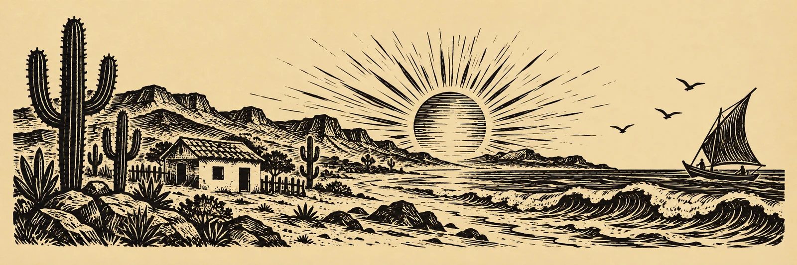

Fotocordel
O mar e o sertão.
Na palma da sua mão.

De onde
vem o verso.
Da jangada que volta. Do quintal, da flor aberta. Da saudade e da risada. Marcello Tubarão encontra poesia no que a vida deixa pelo caminho.
Aqui, a foto é a folha. O verso é a voz. E o fio que junta tudo também vira macramê.
Puxe esse fioO varal
de fotopoesias
Escolha uma folha.
Tem uma história esperando.
Fim do varal.
O verso fica.
O mar
também conta.
Deixe as ondas acompanharem a leitura.
Se preferir, fique só com as palavras.
O mar acompanha sua visita. Você pode silenciar a qualquer momento.
Ambientes sonoros criados digitalmente.
Do nó
nasce o encontro.
Na peça, o fio. Na fotografia, o instante. No cordel, a palavra. Um QR code no macramê abre este varal: a arte feita à mão encontra outra forma de chegar.
Leve o varal com você.
Baixar o QR code
A trama azul é uma referência artística. O código para acessar o site e orientar a produção da peça é este QR acima.
“Que essa luz lhe dê força
enchendo seu coração”
Marcello Tubarão